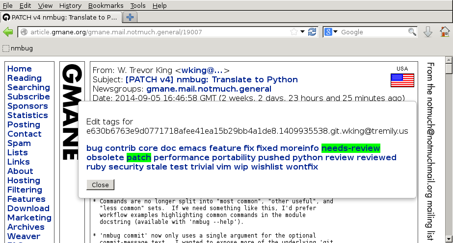

This is the nmbug bookmarklet.
To use it, just copy the link into your bookmarks, and start browsing Gmane. When you want to view or edit tags on the message you're viewing, click on the bookmarklet. It will pop up a dialog with the list of available tags with the currently selected tags highlighted:

Clicking on any tag will toggle its selection. For each tag
change, the bookmarklet will POST to
the nmhive server,
which commits the change to its nmbug database.